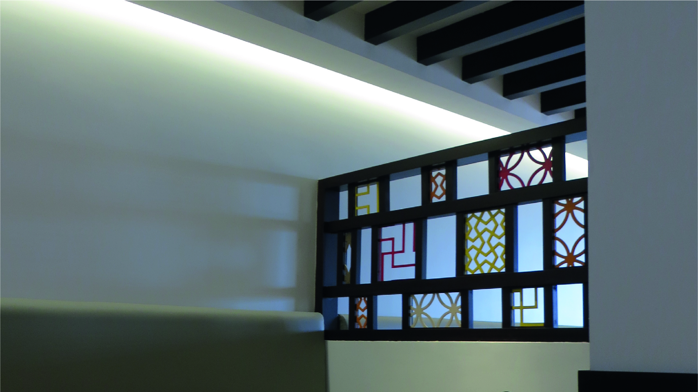
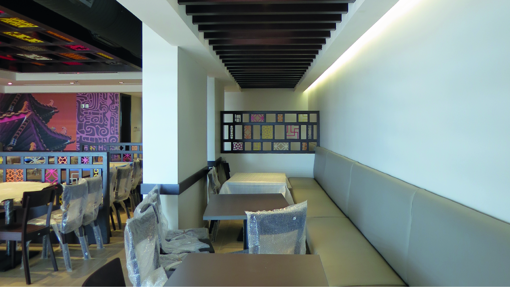
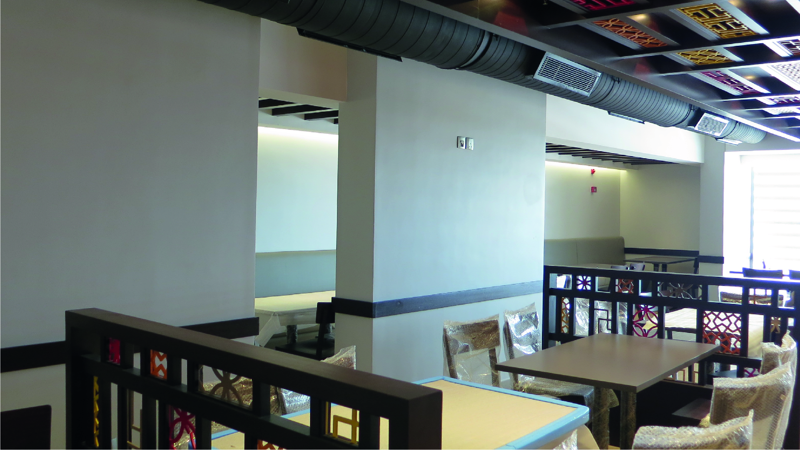
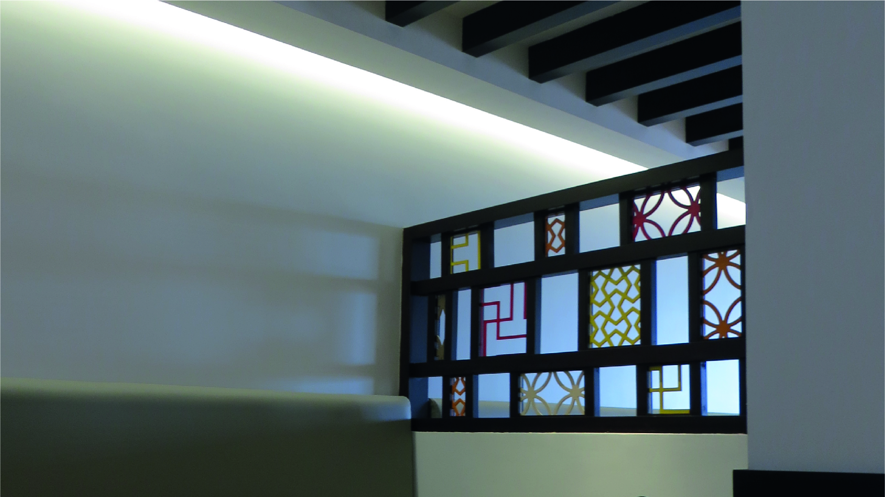
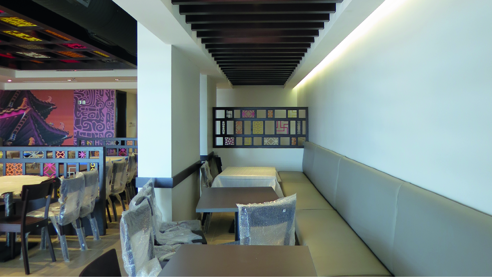
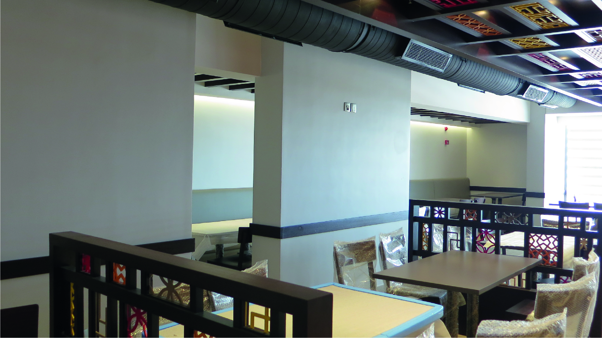

Baytoti Chinese Restaurant
Location:Al-Mohamadyah District
Area:
250 M2
Year:
2012
Baytoti, specializing in casual dining and good quality food, is a restaurant with a distinctive adoptive design theme that is visually clear with a cultural identity. Chinese food catered to Saudi’s taste is Baytoti’s ambition.
The concept is a Pagoda built in three stages: base, shaft and crown. The design invokes a global environment that is simple, friendly and cozy with an oriental atmosphere. The restaurant contains an open kitchen with the unique qualities of flexibility, natural materials, clarity and functionality. The design also includes Chinese lanterns, Chinese window lattice while materials used are tiles, wood, paper, paint, wallpaper and fabric. The finishes on the furniture and Chinese cuisine creates a Chinese home goodness. A natural harmony exists between the interior design and the overall experience.